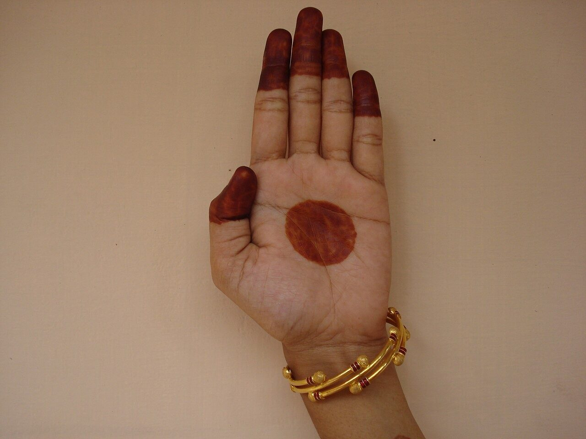

Chapter 14: Hastas: The Language of Gesture¶
Of all the elements of Indian dance and theatre, the codified hand gestures (hasta, also called mudrā) are the most immediately distinctive. With a vocabulary of a few dozen basic hand shapes, each with many conventional meanings, combined with movements of the arms, eyes, face and body, a performer can represent persons, gods, animals, objects and actions, narrate a story and express feelings. The hand gestures are described in the Nāṭyaśāstra, in the Abhinayadarpaṇa and in regional manuals such as the Kerala Hastalakṣaṇadīpikā; they are used, in different forms and to different degrees, in Kūṭiyāṭṭam and Kathakaḷi, in Bharatanāṭyam, Kuchipudi, Odissi and Mohiniyāṭṭam, and more sparingly in Kathak and Manipuri. How a few dozen hand shapes can carry so many meanings is the central question here. The answer lies partly in the systems of the three main texts, partly in the conventions by which one gesture serves many purposes, and partly in the teaching through which a dancer learns them; the dance hasta must also be distinguished from the ritual and iconographic mudrā, with which it is often confused.
14.1 Hasta and Mudrā¶
The Sanskrit dance texts use the word hasta, “hand”, for a gesture of the hand; the word mudrā, “seal” or “sign”, is used in the Kerala tradition and has become common in modern speech for all such gestures. In Hindu and Buddhist ritual and iconography, however, mudrā has a more specific meaning: the gestures made by priests and practitioners in worship and meditation, and the gestures of images of gods and Buddhas — the raised open palm of reassurance (abhaya), the lowered open palm of giving (varada), the joined thumb and forefinger of teaching (vitarka, jñāna), the Buddha’s touching of the earth (bhūmisparśa). Dance gestures and iconographic gestures overlap — a dancer may show the abhaya gesture to represent a god, and sculptors used dance poses — but they are different systems with different purposes: one is a means of representation in performance, the other a ritual and symbolic sign. Statements that dance gestures “are” yogic or tantric mudrās, or that they act on the body’s energies, confuse the two.
14.2 The Hands in the Nāṭyaśāstra¶
Chapter 9 of the Nāṭyaśāstra (in Ghosh’s numbering) describes three groups of hands (Ghosh 1950):
-
twenty-four single hands (asaṃyuta), each formed by one hand: patāka, tripatāka, kartarīmukha, ardhacandra, arāla, śukatuṇḍa, muṣṭi, śikhara, kapittha, kaṭakāmukha, sūcyāsya, padmakośa, sarpaśiras, mṛgaśīrṣa, kāṅgūla, alapadma, catura, bhramara, haṃsāsya, haṃsapakṣa, sandaṃśa, mukula, ūrṇanābha and tāmracūḍa;
-
thirteen combined hands (saṃyuta), formed by both hands together: añjali, kapota, karkaṭa, svastika, kaṭakāvardhamānaka, utsaṅga, niṣadha, dola, puṣpapuṭa, makara, gajadanta, avahittha and vardhamāna;
-
a further group of “dance hands” (nṛtta-hasta), positions and movements of the hands and arms used for their beauty in pure dance rather than to convey meaning, such as caturasra, udvṛtta, talamukha, svastika, latā and karihasta. Their number is given as twenty-seven in some editions and as twenty-nine or thirty in others.
The text also describes the ways in which the hands move (upwards, downwards, sideways, towards and away from the body) and the qualities with which gestures should be performed, and it insists that hand gestures must be accompanied by appropriate movements of the eyes, brows and face. It gives each gesture a list of uses: patāka, for example, can show striking, driving away, joy, pride, heat, rain or a shower of flowers, according to how it is moved and with what expression.
14.3 The Hands in the Abhinayadarpaṇa¶
The Abhinayadarpaṇa’s list, which is the basis of modern teaching in Bharatanāṭyam and several other forms, differs from the Nāṭyaśāstra’s in both number and names (Tables 14.1 and 14.2) (Ghosh 1957; Coomaraswamy and Duggirala 1917).
How many hands?
The counts differ between texts and teaching traditions, and this is a frequent source of confusion.
-
Nāṭyaśāstra: 24 single, 13 combined, and a group of 27–30 dance hands.
-
Abhinayadarpaṇa (Ghosh’s text): 28 single and 23 combined; some recensions and teachers add a twenty-fourth combined hand (avahittha), and many teachers add four further single hands, bringing the number to 32.
-
Hastalakṣaṇadīpikā (Kerala): 24 basic hands, combined to form several hundred signs.
All the figures in this chapter refer to these sources.
14.3.1 The single hands¶
Each single hand is defined by the position of the fingers and thumb and is followed in the text by a verse listing its applications (viniyoga). Table 14.1 gives the twenty-eight single hands of the Abhinayadarpaṇa with a selection of their applications, and Figure 14.1 shows twelve of them, with four of the combined hands.
| # | Name | Formation (in brief) | Some applications |
|---|---|---|---|
| 1 | patāka (flag) | fingers extended together, thumb bent | beginning of dance, clouds, forest, forbidding, night, river, horse, wind, waves, oath, silence, blessing |
| 2 | tripatāka | as patāka, ring finger bent | crown, tree, thunderbolt, Indra, lamp, flames, arrow |
| 3 | ardhapatāka | as tripatāka, little finger also bent | leaves, a panel, river bank, “both”, knife, tower, horn |
| 4 | kartarīmukha | index and middle finger apart (“scissors”) | separation of lovers, opposition, corner of the eye, lightning, death |
| 5 | mayūra (peacock) | ring finger touching thumb, others extended | peacock’s neck, creeper, bird, forehead mark |
| 6 | ardhacandra (half moon) | patāka with thumb extended | crescent moon, plate, spear, waist, meditation, prayer |
| 7 | arāla | index finger bent, thumb bent | drinking poison or nectar, violent wind |
| 8 | śukatuṇḍa (parrot’s beak) | as arāla, ring finger bent | shooting an arrow, throwing a spear, mystery, fierceness |
| 9 | muṣṭi (fist) | fingers closed, thumb over them | steadiness, grasping hair, holding things, wrestling |
| 10 | śikhara (peak) | fist with thumb raised | Kāma, bow, pillar, husband, “no”, silence, embracing |
| 11 | kapittha (wood-apple) | index finger curled over thumb | Lakṣmī, Sarasvatī, holding cymbals, milking, holding flowers |
| 12 | kaṭakāmukha | thumb, index and middle finger joined in a ring | picking flowers, wearing a garland, drawing a bow, speaking |
| 13 | sūcī (needle) | index finger extended from a fist | one, the supreme being, sun, city, “this”, “who?” |
| 14 | candrakalā (digit of the moon) | sūcī with thumb extended | moon, face, Śiva’s crest, the Ganges |
| 15 | padmakośa (lotus bud) | fingers spread and curved as if holding a fruit | round fruits, breasts, ball, lotus bud, flower basket |
| 16 | sarpaśīrṣa (snake’s head) | patāka with the hand cupped | snake, sandal paste, slowness, sprinkling water |
| 17 | mṛgaśīrṣa (deer’s head) | middle fingers bent, thumb and little finger raised | woman, cheek, fear, quarrel, deer’s head |
| 18 | siṃhamukha (lion’s face) | middle and ring finger touching thumb, others extended | lion, coral, pearl, fragrance, testing medicine |
| 19 | kāṅgula | as padmakośa, ring finger bent | small fruits, bells, coconut, young girl’s breasts |
| 20 | alapadma (full-blown lotus) | fingers spread and turned out | full-blown lotus, full moon, mirror, beauty, circling, a lake |
| 21 | catura | three fingers together, little finger raised, thumb at base of middle finger | musk, a little, gold, sorrow, the eyes |
| 22 | bhramara (bee) | middle finger and thumb joined, index bent | bee, parrot, crane, cuckoo, wing |
| 23 | haṃsāsya (swan’s beak) | thumb and index joined, others extended | tying the marriage thread, instruction, pearl, painting, jasmine |
| 24 | haṃsapakṣa (swan’s wing) | a variant of sarpaśīrṣa with the little finger set apart | six, building a bridge, nail marks, covering |
| 25 | sandaṃśa (tongs) | padmakośa opened and closed | offering, wound, worm, fear, worship, five |
| 26 | mukula (bud) | fingertips joined | water lily, eating, Kāma’s arrows, navel, seal |
| 27 | tāmracūḍa (cock) | index bent, other fingers closed | cock, crane, camel, calf, writing |
| 28 | triśūla (trident) | thumb and little finger joined, others extended | bilva leaf, three things together |
14.3.2 The combined hands¶
The twenty-three combined hands of Ghosh’s text (Table 14.2) include gestures of greeting and respect (añjali, kapota), gestures that show objects or creatures by imitation (the fish, tortoise, boar and Garuḍa used in depicting Viṣṇu’s incarnations), gestures for divine attributes (the conch and discus of Viṣṇu, the liṅga of Śiva) and gestures for actions (swinging the arms, offering flowers, embracing).
| Name | Some applications | Name | Some applications |
|---|---|---|---|
| añjali | salutation to gods, teachers and others | śaṅkha | conch |
| kapota | respectful speech, humility | cakra | discus |
| karkaṭa | a crowd, bending a branch, stretching | sampuṭa | casket, covering |
| svastika | crocodile, fear, praise | pāśa | enmity, chain, noose |
| ḍolā | beginning of dance | kīlaka | affection, lovers’ talk |
| puṣpapuṭa | offering flowers or water | matsya | fish |
| utsaṅga | embrace, modesty | kūrma | tortoise |
| śivaliṅga | the liṅga of Śiva | varāha | boar |
| kaṭakāvardhana | coronation, worship, marriage | garuḍa | Garuḍa |
| kartarīsvastika | branches, trees, mountain peaks | nāgabandha | serpents entwined, a bower |
| śakaṭa | a demon | khaṭvā | bed, palanquin |
| bheruṇḍa | a pair of birds |


14.3.3 One hand, many meanings¶
The principle that makes this small vocabulary expressive is viniyoga, “application”: each hand is used for many things, and the meaning is made clear by the context — the words of the song, the movement and position of the hand, the other hand, the eyes and face, the posture. The patāka, the flat hand, can show the beginning of a dance when raised before the face, a cloud when moved above the head, a river when moved sinuously at waist height, waves when the fingers ripple, a horse when moved in galloping rhythm, and silence or an oath when held before the lips or raised. A single hand can thus serve as noun, verb or attribute.
The meanings fall into a few types. Some gestures imitate the shape of an object (the sarpaśīrṣa for a snake’s hood, the mṛgaśīrṣa for a deer’s head, the combined matsya for a fish). Some show an action by miming it (kaṭakāmukha for drawing a bow or picking a flower). Some are conventional signs whose meaning must simply be learnt (śikhara for a husband, kapittha for Lakṣmī). Expert dancers combine these resources, using a gesture to show an object and then, with a change of expression, the feeling it arouses; and they sometimes devise new uses where the lists say nothing, within the logic of the system.
14.4 Special Sets of Hands¶
The Abhinayadarpaṇa and the teaching tradition that follows it add a number of special sets, formed by combining single hands in fixed ways (Ghosh 1957):
-
Hands for the gods (devahasta): fixed pairs of gestures for Brahmā, Viṣṇu, Śiva, Sarasvatī, Pārvatī, Lakṣmī, Gaṇeśa, Kārttikeya, Kāma, Indra, Agni, Yama and others, usually showing the god’s characteristic attribute (the discus and conch of Viṣṇu, the deer and axe of Śiva, the elephant head of Gaṇeśa).
-
The ten incarnations of Viṣṇu (daśāvatāra): sequences that show the fish, tortoise, boar, man-lion, dwarf, Paraśurāma, Rāma, Balarāma, Kṛṣṇa and Kalki.
-
The nine planets (navagraha): gestures for the sun, moon, Mars, Mercury, Jupiter, Venus, Saturn, Rāhu and Ketu.
-
Relations (bāndhava): gestures for husband and wife, mother and father, son, brother and others.
-
Social classes (jāti): gestures for the brahmin, the kṣatriya, the vaiśya and the śūdra.
-
Famous rivers, trees and creatures: gestures for the Ganges and other rivers, for particular trees and for animals and birds.
The precise forms of these gestures vary in different manuscripts and teaching lineages, and the lists in modern handbooks are often expanded. They show how closely the dance vocabulary was tied to the religious culture of its audiences, and — in the gestures for the four varṇas — how naturally the social hierarchy entered the representational code.
14.5 The Kerala Tradition: Hastalakṣaṇadīpikā¶
In Kerala, the gesture language of Kūṭiyāṭṭam and Kathakaḷi is based not on the Abhinayadarpaṇa but on the Hastalakṣaṇadīpikā, an anonymous manual of uncertain date. It describes twenty-four basic hands (mudrā): patāka, mudrākhya, kaṭaka, muṣṭi, kartarīmukha, śukatuṇḍa, kapittha, haṃsapakṣa, śikhara, haṃsāsya, añjali, ardhacandra, mukura, bhramara, sūcīmukha, pallava, tripatāka, mṛgaśīrṣa, sarpaśiras, vardhamānaka, arāla, ūrṇanābha, mukula and kaṭakāmukha. Many names are shared with the Sanskrit texts, but the shapes and uses often differ. Each basic hand can be made with one hand or with both, held in different positions and moved in different ways, and the combinations yield a vocabulary of several hundred signs (Zarrilli 2000; Richmond et al. 1990).
In Kathakaḷi and Kūṭiyāṭṭam the actor “speaks” with the hands: the text of the play, sung by the singers in Kathakaḷi or spoken by the actor in Kūṭiyāṭṭam, is rendered word by word in gesture, including grammatical words, with the eyes following and the face expressing the emotion. The gestures are larger and more forceful than those of Bharatanāṭyam, suited to the scale of the characters and the lamplit stage, and they are performed with a precise relationship to the rhythm of the drums. Kathakaḷi students spend years mastering them (Chapter 18).
14.6 Other Regional Traditions¶
Each of the dance forms has its own gestural practice. Odissi draws on the Abhinayacandrikā and on the gestures of Odishan temple sculpture; its hands are held softly and in curved lines that match the tribhaṅga posture of the body (Chapter 17). Kuchipudi and Mohiniyāṭṭam follow the Abhinayadarpaṇa and the Kerala manuals respectively, with their own conventions. Kathak, shaped in the courts of north India where the expressive repertoire centred on the improvised interpretation of songs, uses a much smaller and less codified set of gestures, often closer to naturalistic mime, alongside the formal hand positions of its pure dance; Manipuri uses soft, rounded hand movements that rarely form the sharp shapes of the southern forms. Even within Bharatanāṭyam, teachers of different lineages (Pandanallur, Vazhuvoor, Thanjavur, Kalakshetra) differ in the shapes and uses of particular hands, and the “standard” forms taught in institutions represent the choices of twentieth-century teachers.
14.7 Hands in Pure Dance¶
In passages of pure dance (nṛtta) the hands do not represent anything; they complete the lines of the body and articulate the rhythm. Bharatanāṭyam dancers use a small set of hands for this purpose, especially patāka, tripatāka, ardhacandra, kaṭakāmukha, alapadma, haṃsāsya and mṛgaśīrṣa, placed at the hips or chest or extended in straight lines from the shoulder; Odissi and Kuchipudi have their own conventions. The nṛtta-hastas of the Nāṭyaśāstra were movements of the arms and hands for the same purpose. The distinction between “meaningful” and “decorative” hands is not absolute — a pure-dance passage may include a gesture with a meaning, and an expressive passage depends on the beauty of line — but it reflects the basic division of Indian dance into pure and expressive modes (Chapter 13).
14.8 Movement, Placement and Sequence¶
A hand shape is only the beginning of a gesture. The Nāṭyaśāstra describes four basic movements of the wrist and fingers that accompany gestures — winding inwards (āveṣṭita), unwinding outwards (udveṣṭita), turning back (vyāvartita) and turning round (parivartita) — and the directions in which the hands can move. Dancers learn that the same shape means different things at different heights and distances from the body: a hand held high may indicate the sky, a god or something lofty; at the chest, the self or the heart; at the side, something beside or behind. The quality of movement matters too: a slow, sinuous patāka is a river, a quick, rippling one waves, and a sharp, cutting one a sword.
In performance, gestures form sequences that narrate an action. To show Kṛṣṇa lifting Mount Govardhana to shelter the cowherds from Indra’s storm, a dancer might show Kṛṣṇa with the flute, the gathering clouds and falling rain, the frightened people and cattle, the god raising the mountain on one finger and holding it aloft, and the people taking shelter beneath — each image a gesture or brief combination, linked by changes of posture, gaze and expression. Experienced dancers vary such sequences from performance to performance, and two dancers of the same school may interpret the same line in quite different ways.
14.9 Gesture in Sculpture¶
Indian sculptors drew on the same vocabulary. The bronze images of Śiva Naṭarāja made in the Cōḻa period show one right hand raised in the gesture of reassurance (abhaya) and one left arm thrown across the body in the position the Nāṭyaśāstra calls karihasta or gajahasta, the “elephant’s trunk” arm, pointing to the raised foot; the other hands hold the drum of creation and the fire of destruction. Images of gods frequently show the kaṭakāmukha hand holding a flower, the kapittha or śikhara hands holding weapons, and the patāka hands of blessing. The overlap between the dancer’s and the sculptor’s vocabulary has encouraged the reconstruction of dance from sculpture (Chapters 2 and 12), but it should not be overstated: sculptors chose gestures for clarity of symbolic meaning in a single, static image, dancers for clarity in movement and in a sequence (Vatsyayan 1968; Smith 1996).
14.10 Learning the Hands¶
In the classical forms, students learn the hands early, usually by reciting the verses of the Abhinayadarpaṇa (or the Kerala manual) while forming each hand, and then by learning their applications in verses and simple songs. Expressive use develops later, through the learning of compositions in which each word of the text has its gesture, and through the guidance of a teacher who shows several ways of interpreting the same line. In Kathakaḷi the training is longer and more intensive: students practise the hands daily with the eye exercises, and learn the vocabulary as part of learning the plays.
The goal of this training is not the mechanical display of gestures. Teachers insist that a gesture should be “filled” with the feeling it conveys, that the eyes should follow the hand and the face express its meaning, and that the transitions between gestures matter as much as the gestures themselves — the principle expressed in the Abhinayadarpaṇa’s verse “where the hand goes, there the eyes go” (Chapter 12). Great performers of abhinaya have often used relatively few codified gestures, relying on the eyes and face and on subtle movements of the body.
14.11 Gesture Beyond the Stage¶
In the twentieth century the hand gestures of Indian dance became a symbol of Indian culture itself. Coomaraswamy’s The Mirror of Gesture presented them as a classical language comparable with the arts of Europe; they appeared on stamps, in posters and in public art; and, in a striking recent example, a wall of large sculpted hands forms the backdrop of the arrival hall at Delhi’s international airport (Figure 14.2). Their use as national emblems has made them familiar far beyond the audiences of dance.
_at_Delhi_airport.jpg){kind=link}
Hand gestures have also been drawn into the modern wellness industry, which teaches “mudrās” claimed to affect health, energy and mood. These practices draw on the ritual and yogic mudrās described above rather than on the dance tradition, and their health claims have not been demonstrated.
Health and Safety Note
There is no reliable evidence that holding particular hand gestures treats illness, whether the explanation offered is “energy”, mirror neurons or acupressure points. The general point about therapeutic claims for the arts is made in Section 4.13; “mudrā therapy” is not a substitute for medical care.
Further Reading¶
The hand gestures of the Abhinayadarpaṇa are described and translated in Coomaraswamy and Duggirala (1917) and Ghosh (1957), and those of the Nāṭyaśāstra in Ghosh (1950). Vatsyayan (1968) and Bose (1991) discuss gesture in the dance texts and in sculpture. For the Kerala tradition see Zarrilli (2000) and Jones and Jones (1970).